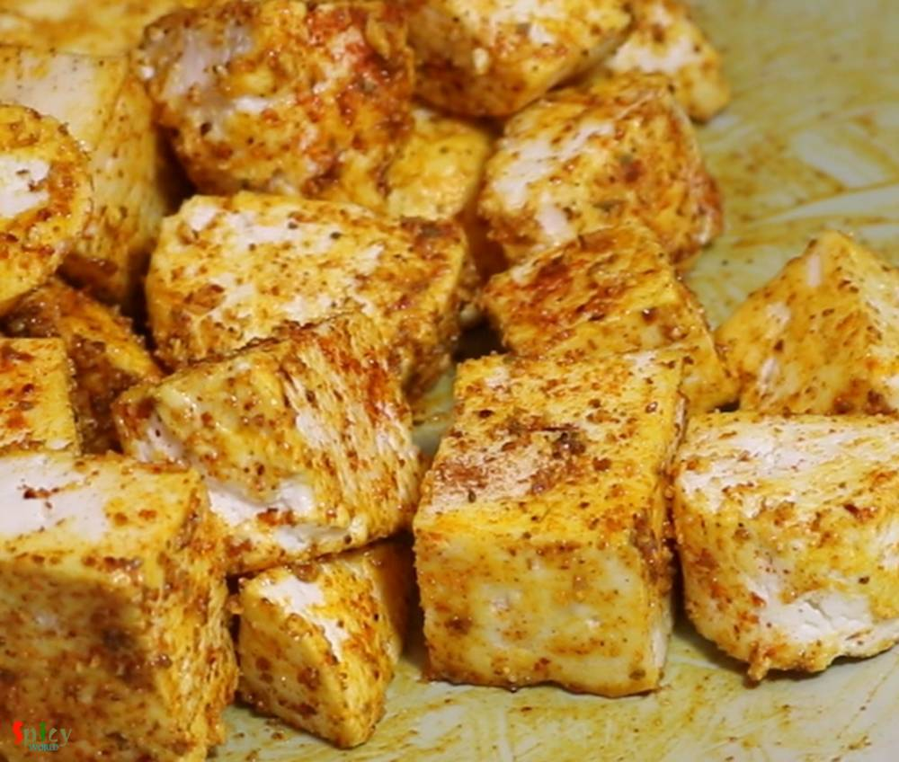
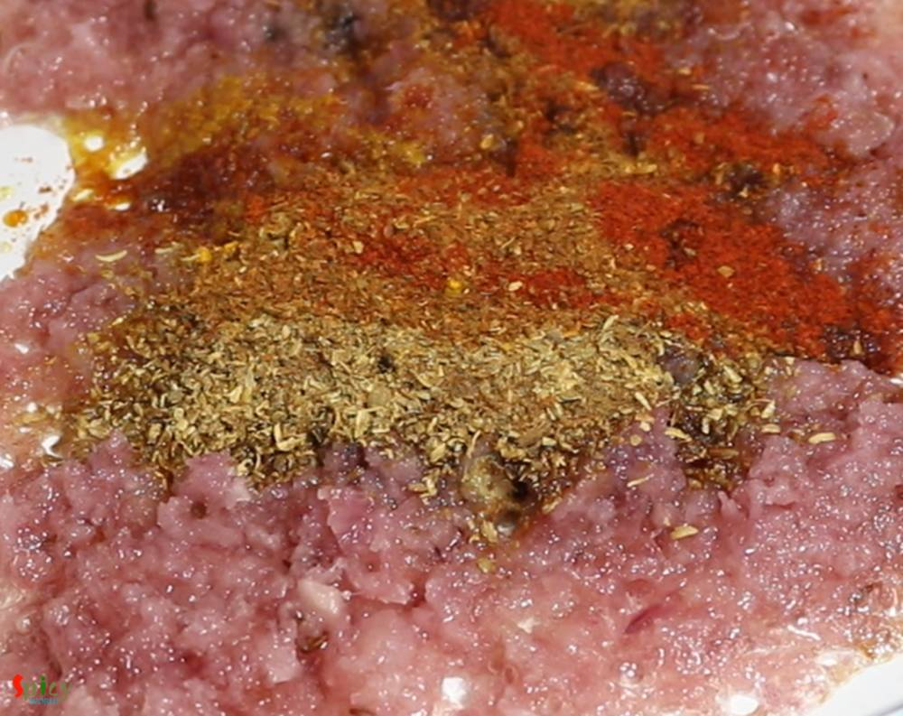
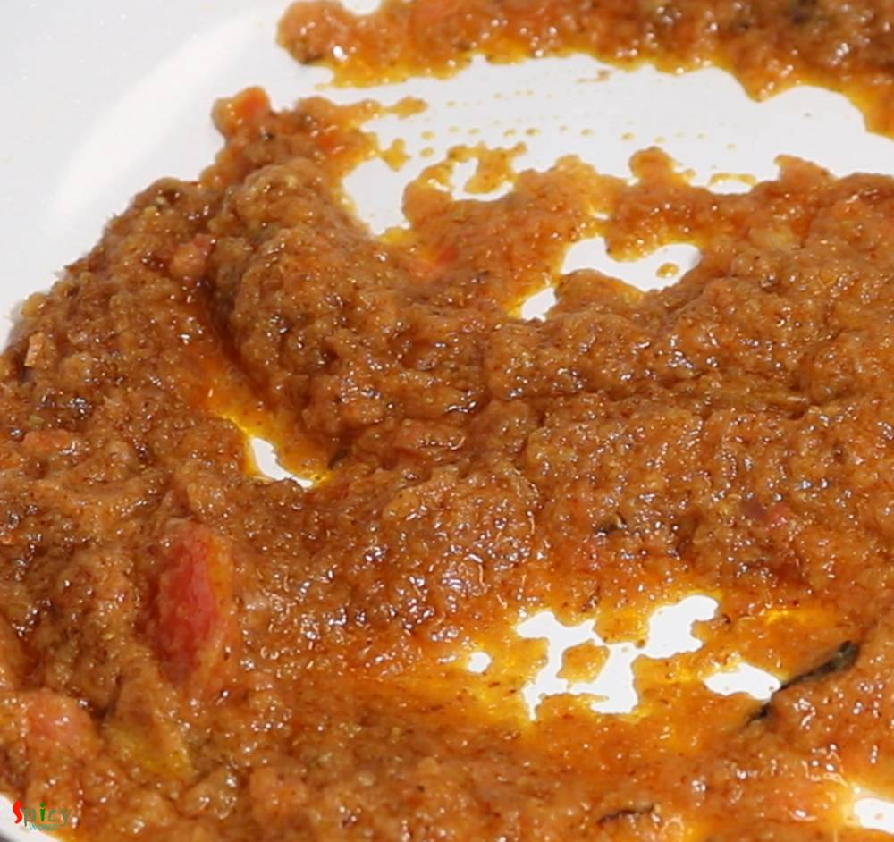
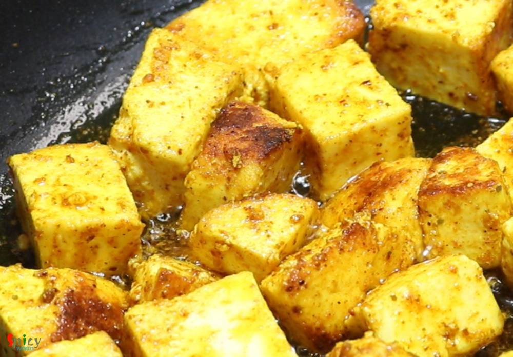
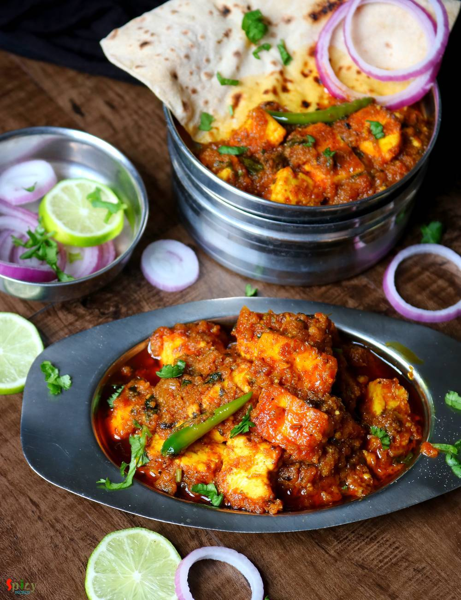

Simple and Easy Recipes
Dhaba style Paneer Masala
© 2016 Spicy World, Published on: Jun 4, 2019
Paneer Masala has a spicy onion and tomato based gravy with some flavorful spices like garam masala powder, dry fenugreek leaves etc. In any dhaba style (road side food joints) curry you will get actual flavors of the spices as they follow one simple rule - slow cooking. Fry the onion until golden, cook ginger garlic paste until raw smell gone, after adding dry spices cook on low flame and obviously you have to add ghee or butter. If you can follow these few simple things, then trust me you can achieve the exact taste of Dhaba style Paneer Masala. Do give this a try and let me know how it turned out for you.

Ingredients
- 500 grams of paneer (cut into cubes).
- Paste of 1 medium onion.
- 2 Tablespoons of ginger garlic paste.
- Puree of 1 medium tomato.
- Salt and sugar as per your taste.
- Spice powder 1 Teaspoon each (turmeric powder, chili powder, kashmiri chili powder, roasted cumin and coriander powder, garam masala powder).
- 2 green chilies.
- 2 Teaspoons of dry fenugreek leaves.
- 2 Tablespoons of ghee or clarified butter.
- For Paneer cubes - half Teaspoon each (salt, turmeric powder, chili powder, garam masala powder and 1 Teaspoon oil).
- Whole spices - 1 Teaspoon cumin seeds, 2 cloves, 2 green cardamom, one very small cinnamon stick.
- Some chopped coriander leaves.
- 4-5 Tablespoons of cooking oil.
- Half cup of hot water.


Steps
Marinate the paneer cubes with all of the spices from the ingredients list where I mentioned 'for paneer cubes'.
Keep aside for 30 minutes.
Heat 3 Tablespoons of oil and ghee in another pan.
Saute all of the whole spices in hot oil for few seconds.
Add onion paste and cook until raw smell is gone.
Then add ginger garlic paste until the raw smell is gone.
Add all of the spice powder, mix well for 2-3 minutes.
Then add tomato puree, salt and sugar, mix well and cook for 5 minutes on medium flame.
In another pan, heat 2 Tablespoons of oil.
Add the marinated paneer pieces, fry for 3-4 minutes on medium flame.
Now add the fried paneer along with the oil into the prepared gravy.
Mix well for 2 minutes then add half cup of hot water. Cook for 5 minutes.
Lastly add green chilies, dry fenugreek leaves, garam masala powder and chopped coriander leaves.
Your dhaba style paneer masala is ready to serve.
Serve this hot with chapati or naan or pulao ..
")